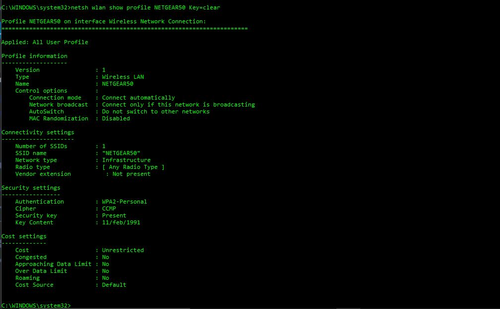

List of Projects
My First Webpage
- A simple first website with links, pictures, and basic CSS.
- Uses HTML5 and CSS3
A Resort Webpage
- A comedic website displaying a fake resort, that uses background, color, and text/image alignment.
- Uses HTML5 and CSS3
Wikipedia Copy
- A website attempting to copy the main page of Wikipedia aesthetically, using bootstrap.
- Uses HTML5, CSS3, and Bootstrap
